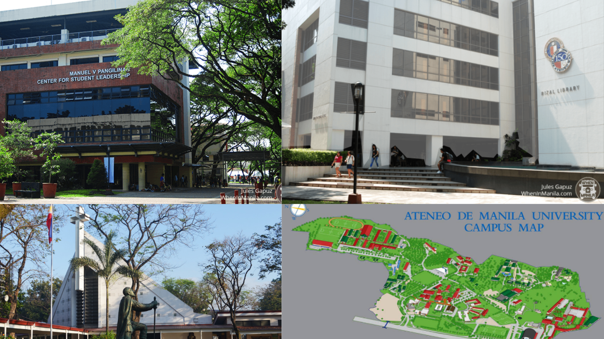

History
Founded in 1859, Ateneo de Manila University traces its roots to the Escuela Municipal de Manila, established by Spanish Jesuits in Intramuros. The school evolved through the years, becoming Ateneo Municipal de Manila in 1865 and offering a liberal arts-based education. In 1902, during the American period, it became a private institution and adopted its present name. Despite challenges such as the 1932 fire and wartime destruction, Ateneo rebuilt itself and moved to its Loyola Heights campus in 1952. Today, Ateneo stands as a premier university known for academic excellence, leadership formation, and social involvement.
Undergraduate Majors
Ateneo de Manila University offers a wide range of fields of specialization in the arts, sciences, mathematics and management. Each major curriculum consists of a sequence of courses that provide a strong foundation in the student’s chosen area of concentration. The flexible structure of the first two years allows students to shift majors with minimal loss of time and credits.
Achievements
Ateneo de Manila has consistently been ranked among the top universities in the Philippines and Asia. It is renowned for producing leaders in government, business, and social sectors, including several Philippine presidents and national artists. Ateneo’s Blue Eagles also excel in collegiate sports, embodying the school’s values of excellence and sportsmanship.
| Program | School | Degree Type |
|---|---|---|
| AB Literature (English) | School of Humanities | Regular Program |
| BFA Major in Information Design | School of Humanities | Regular Program |
| BS Learning Science and Design | School of Education and Learning Design | Regular Program |
| BS Management Engineering | John Gokongwei School of Management | Honors Program |
| BS Management of Applied Chemistry | John Gokongwei School of Management | Regular Program |
| BS Computer Science | School of Science and Engineering | Regular Program |
| BS Computer Engineering | School of Science and Engineering | Regular Program |
| BS Biology | School of Science and Engineering | Honors Program |
| AB Communication | School of Social Sciences | Regular Program |
| AB Political Science | School of Social Sciences | Regular Program |
| AB Economics (Honors) | School of Social Sciences | Honors Program |
Ateneo Hymn – "A Song for Mary"
he Ateneo Hymn, titled "A Song for Mary", expresses devotion to the Blessed Virgin Mary, the university’s patroness, and symbolizes the spirit of service, excellence, and faith that Ateneans uphold. It is traditionally sung during university events, graduation ceremonies, and athletic victories.
Admissions Information
he Ateneo College Admissions process identifies students with strong academic potential, leadership qualities, and social awareness. Applications open annually, and full details are available on the official Ateneo website.